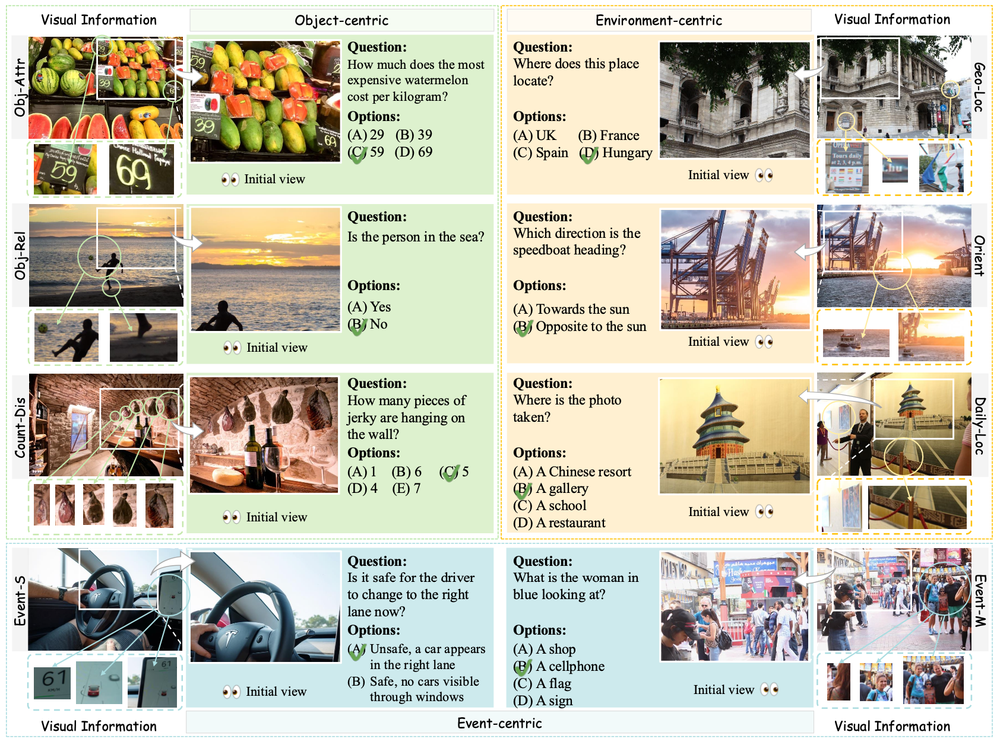

ActiView is a benchmark designed to evaluate the active perception abilities of Multimodal Large Language Models (MLLMs). In this task, models are challenged to navigate and adjust their filed of view to answer questions, simulating human-like active perception.
Ziyue Wang1, Chi Chen1, Fuwen Luo1, Yurui Dong2, Yuanchi Zhang1, Yuzhuang Xu1, Xiaolong Wang1, Peng Li1, Yang Liu1
1Tsinghua University, Beijing, China; 2Fudan University, Shanghai, China
Active perception, a crucial human capability, involves setting a goal based on the current understanding of the environment and performing actions to achieve that goal. Despite significant efforts in evaluating Multimodal Large Language Models (MLLMs), active perception has been largely overlooked. To address this gap, we propose a novel benchmark named ActiView to evaluate active perception in MLLMs. Since comprehensively assessing active perception is challenging, we focus on a specialized form of Visual Question Answering (VQA) that eases the evaluation yet challenging for existing MLLMs. Given an image, we restrict the perceptual field of a model, requiring it to actively zoom or shift its perceptual field based on reasoning to answer the question successfully. We conduct extensive evaluation over 27 models, including proprietary and open-source models, and observe that the ability to read and comprehend multiple images simultaneously plays a significant role in enabling active perception. Results reveal a significant gap in the active perception capability of MLLMs, indicating that this area deserves more attention. We hope that our benchmark could help develop methods for MLLMs to understand multimodal inputs in more natural and holistic ways.
Despite the extensive efforts devoted to MLLM evaluation, active perception remains underexplored. Active perception involves understanding the reasons for sensing, choosing what to perceive, and determining the methods, timing, and locations for achieving that perception[1]. This is important because in the real world, the desired information often does not appear directly in the center of one’s field of vision. Instead, it requires individuals to move their field of view, locate details, and filter out distracting information. For example, in right figure, suppose we are looking for information in a giant painting. We need to first shift our view to locate the specific area and then possibly zoom in to gather detailed information. Intuitively, active perception not only enables a person or model to accomplish more complex tasks, but it also has the potential to serve as a good indicator of the level of intelligence of a model. This makes it a critical capability that warrants thorough evaluation.

(Explore the code and datasets for ActiView: View on GitHub)
Our benchmark exams active perception abilities of models via different perceptual fields, Actively zooming and shifting of Views (ActiView) are required. We summarise zooming and shifting as two fundamental factors of active perception, where we can evaluate active perception abilities of models through the two factors separately or integratedly. ActiView imitates the procedure of active perception by providing models with an initial view, which is a cropped field of the original image, as depicted in the above figure, and requires models to search for missing but important information with view zooming and shifting, and to minimize distractions caused by redundant information in the view.
When perceiving an image, humans intuitively focus on three principle aspects: the environment depicted in the image, the primary objects, and the event that these objects are engaged in. Correspondingly, we summarise the questions in our benchmark into three main categorises, including environment-centric (Type I), object-centric (Type II), and event-centric (Type III) categorises. These main categorises are further divided into eight sub-classes according to the specific type of visual information and visual features used for answering the questions. The name of each sub-classes are shown in the above example and we refer readers to our paper for detailed explanations.
We design three pipelines for different abilities (as illustrated in the above figure), two fundamental independent abilities, zooming and shifting, and a mixture of them.
Zooming pipeline evaluates the ability to locate and determine fine-grained information that are necessary to answer the question (pipeline (a) above). It contains two stages, the view selection and the question answering stages. To simulate the zooming operation, models are required to first select sub-views to be zoomed given the initial view, then answer questions based on these zoomed views. The initial view used in this pipeline is the full image with size w × h. Each of the selected sub-views will be resized to size w × h, the same size as the initial view.
Shifting pipeline evaluates the ability to shift perceptual fields for missing information and to deduce the answer given perceived perceptual fields, which is also a two-stage pipeline (pipeline (b) above). To simulate the movement of human eyes, models are presented with an initial view, of size w × h, which is a cropped field from the original image, and are asked to determine if the current view or views are sufficient for answering the questions repeatedly until the model is able to answer the question or all the views are consumed.
Mixed pipeline does not specify the type of active perception ability required, while the above pipelines require to either zooming or shifting. As illustrated in pipeline (c), models must independently decide whether to zoom and/or shift to different perceptual fields. Unlike the zooming pipeline, where the model answers questions based on all selected views, in the mixed pipeline, a view would be discarded after zooming if the model recognizes it as irrelevant to the question. In comparison to the shifting pipeline, the mixed pipeline also provides access to the full image view in addition to cropped sub-views.
We demonstrate three cases for the three proposed pipelines, with results generated by GPT-4 models and Gemini-1.5 models. Case (a) stands for the zooming evaluation, where models successfully identify the view containing useful information and generate the correct result. Case (b) illustrates a failure in the shifting-R evaluation, where all the models continue shifting to new views until all views are used. Though including the correct views, the additional views severely distract the reasoning process, where three out of four employed models produce incorrect answers.
To explore how human-like mixed evaluation affects the visual reasoning process, we further examine this failure case using GPT-4o. As shown in case (c), GPT-4o first zooms into the "upper left" and "upper right" views, then discards the "upper right" view and shifts to the "lower left" one, which finally leads to the correct answer. Notably, in the final preserved views, distracting information (the highest price tag on papaya, "69") is screened out. This indicates that GPT-4o exhibits decent active perception abilities to move the field of view, locate details, and filter out distracting information.
| Models | Full image | Zooming | Single View | Shifting-R | Shifting-E | Shifting-M | Shifting-H | Model AVG |
|---|---|---|---|---|---|---|---|---|
| Proprietary Models | ||||||||
| Gemini-1.5-pro | 73.85 | 72.31 | 58.15 | 67.08 | 67.38 | 65.54 | 67.69 | 68.00 |
| GPT-4o | 67.38 | 68.62 | 61.23 | 67.08 | 66.77 | 65.23 | 64.31 | 66.40 |
| Claude 3.5 Sonnet | 72.92 | 71.69 | 54.46 | 65.23 | 66.15 | 60.31 | 61.85 | 65.05 |
| Open-source models for multiple images as input | ||||||||
| Qwen2-VL | 63.08 | 64.62 | 54.46 | 61.23 | 62.77 | 64.31 | 61.85 | 62.96 |
| Idefics3-8B-Llama3 | 59.08 | 58.15 | 53.23 | 61.85 | 59.38 | 59.69 | 60.31 | 59.88 |
| MiniCPM-V 2.6 | 64.62 | 61.85 | 54.46 | 54.77 | 61.23 | 58.15 | 55.69 | 58.34 |
| mPLUG-Owl3 | 62.46 | 60.92 | 54.15 | 51.69 | 56.31 | 55.69 | 53.54 | 55.63 |
| LLaVA-OneVision | 64.92 | 65.23 | 56.92 | 53.54 | 57.23 | 52.31 | 48.62 | 55.39 |
| InternVL2-8B | 58.15 | 56.00 | 45.85 | 54.77 | 59.70 | 53.23 | 52.00 | 55.14 |
| Mantis | 59.08 | 60.62 | 52.92 | 52.92 | 55.38 | 52.92 | 52.31 | 54.83 |
| Idefics2-8B | 61.85 | 61.85 | 55.69 | 53.23 | 56.92 | 51.69 | 49.23 | 54.58 |
| Brote-IM-XL-3B | 54.77 | 54.46 | 55.69 | 51.38 | 51.08 | 52.62 | 47.69 | 51.45 |
| Idefics2-8B-base | 52.62 | 48.62 | 47.69 | 49.54 | 50.77 | 47.69 | 47.69 | 48.86 |
| Brote-IM-XXL-11B | 53.85 | 54.77 | 49.23 | 49.85 | 50.77 | 44.92 | 43.69 | 48.80 |
| MMICL-XXL-11B | 51.69 | 49.54 | 50.15 | 49.85 | 49.85 | 46.77 | 45.54 | 48.31 |
| MMICL-XL-3B | 49.85 | 49.85 | 44.31 | 44.92 | 48.92 | 45.85 | 44.31 | 46.77 |
| Open-source models for single image as input | ||||||||
| MiniCPM-Llama3-V-2.5 | 63.87 | 61.25 | 54.47 | 60.92 | 60.31 | 59.38 | 58.46 | 60.06 |
| GLM-4V-9B | 67.08 | 56.92 | 53.85 | 56.92 | 60.62 | 56.00 | 52.92 | 56.68 |
| InternVL-Vicuna-13B | 56.92 | 62.77 | 52.31 | 53.85 | 52.92 | 52.92 | 51.08 | 54.71 |
| LLaVA-1.6 7B | 55.08 | 68.92 | 50.15 | 51.69 | 52.31 | 49.23 | 48.00 | 54.03 |
| InternVL-Vicuna-7B | 55.38 | 65.23 | 51.70 | 52.92 | 51.38 | 50.77 | 48.62 | 53.78 |
| LLaVA-1.6 13B | 56.92 | 65.23 | 52.31 | 45.85 | 55.08 | 52.62 | 48.92 | 53.54 |
| InternVL-Vicuna-13B-448px | 50.46 | 57.85 | 45.54 | 48.31 | 48.31 | 48.92 | 48.92 | 50.46 |
| mPLUG-Owl2-7B | 55.08 | 55.38 | 52.00 | 47.38 | 46.46 | 46.46 | 46.15 | 48.37 |
| Mini-Gemini-7B-HD | 55.69 | 34.77 | 51.70 | 48.62 | 48.00 | 47.69 | 50.15 | 45.85 |
| SEAL | 48.31 | 54.77 | 42.77 | 42.15 | 42.77 | 40.02 | 40.62 | 44.07 |
| Mini-Gemini-7B | 47.08 | 17.85 | 47.38 | 39.38 | 38.15 | 38.15 | 36.00 | 33.91 |
[1] Ruzena Bajcsy, Yiannis Aloimonos, and John K Tsotsos. Revisiting active perception. Autonomous Robots, 42:177–196, 2018.